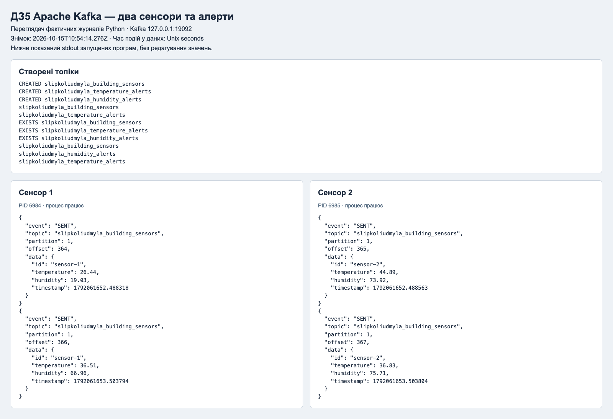
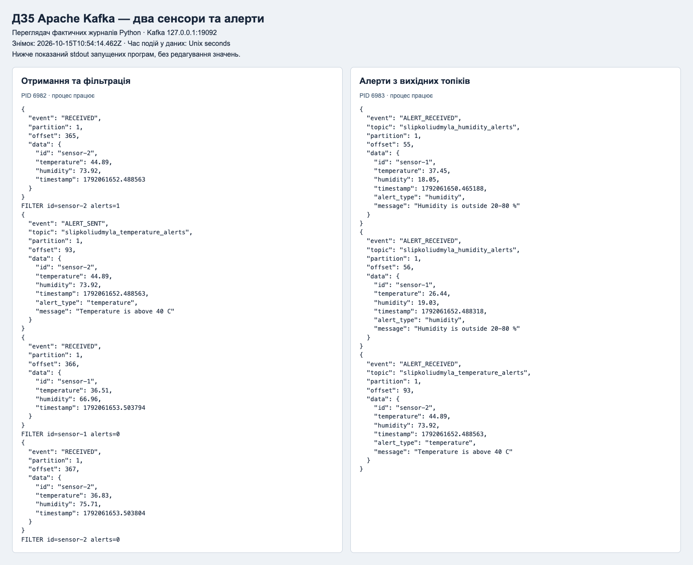

Data Engineering · Сліпко Людмила
ДЗ5 Apache Kafka
Два сенсори надіслали 480 записів. Перевірено 113 температурних і 73 вологісних алертів та 8 граничних випадків.
Це опублікований звіт про локальний запуск Python і Kafka. Програми запускаються за інструкцією у репозиторії.
Чекліст ментора
- ✅ Створення 3 топіків (10 балів).
- ✅ Генерація даних сенсорів та відправка даних в building_sensors (20 балів).
- ✅ Отримання даних з building_sensors, фільтрація даних (25 балів).
- ✅ Відправка фільтрованих даних в temperature_alerts та humidity_alerts (30 балів).
- ✅ Отримання даних з temperature_alerts і humidity_alerts та виведення на екран (15 балів).
Перевірено на справжньому Kafka 3.9.1. Докази для кожного пункту наведено в DOCX, скриншотах і сирих журналах у evidence.
Два одночасні сенсори

Обробка та читання алертів

Повна перевірка
{
"result": "PASS",
"source_records": 480,
"sensor_counts": {
"sensor-2": 240,
"sensor-1": 240
},
"temperature_alerts": 113,
"humidity_alerts": 73,
"boundary_cases": 8,
"output_matches_every_input": true
}Що роблять ключові рядки
producer.py формує один запис зі сталим ID сенсора. Два незалежні if перевіряють температуру > 40 і вологість поза 20–80 %. send(...).get() очікує підтвердження Kafka; consumer.commit() зберігає позицію після надсилання всіх алертів.